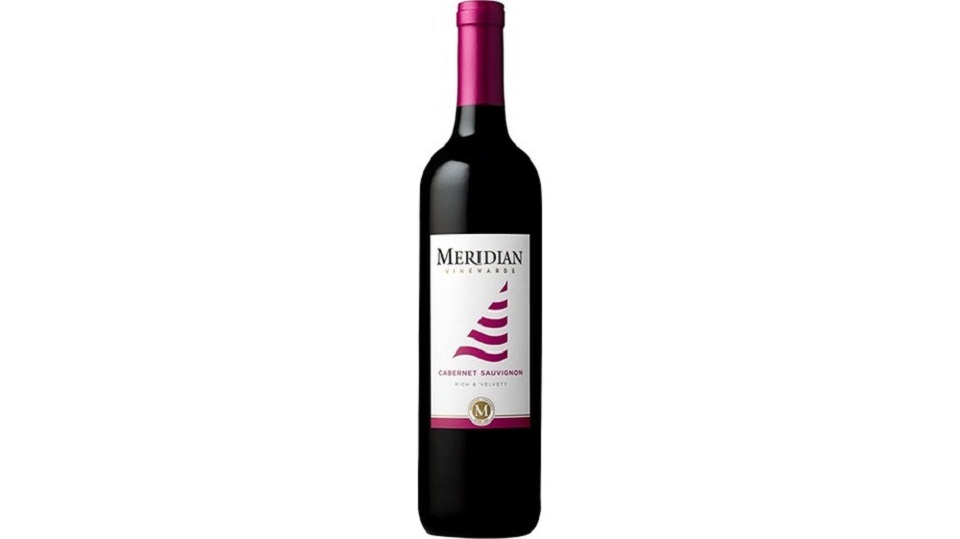

| 1. Meridian Cabernet Sauvignon |
Flavors include green tea, red bean, and mango sorbet (seasonal)
|
₱100 |
| 2. Layer Cake Shiraz |
This well balance Shiraz offers flavors of bing cherry and cassis flavors. With hints of black pepper, this wine finishes subtle and smooth. Pairs nicely with Hibachi Steak or Negimayaki.
|
₱100 |
| 3. Echelon Pinot Noir |
Intense flavors of ripe fruits such as black cherry and plum, accented by charming, spicy notes of cinnamon and black pepper. Harmonious and well balanced, it is an attractive example of true Pinot Noir varietal character. This wine pairs nicely with Hibachi Steak and Negimayaki.
|
₱100 |
4. Cline "California" Zinfandel |
Rich and jammy with a plum, strawberry, spice, and herb-laced flavors. Try it with the Yakitori or a Teriyaki dish.
|
₱100 |
5. Eppa Sangria |
Antioxidant heaven. This sangria is packed with rich superfruits of blueberry, pomegranate, blood orange and Açaí palm berries. Refreshing for any time of day..
|
₱100 |